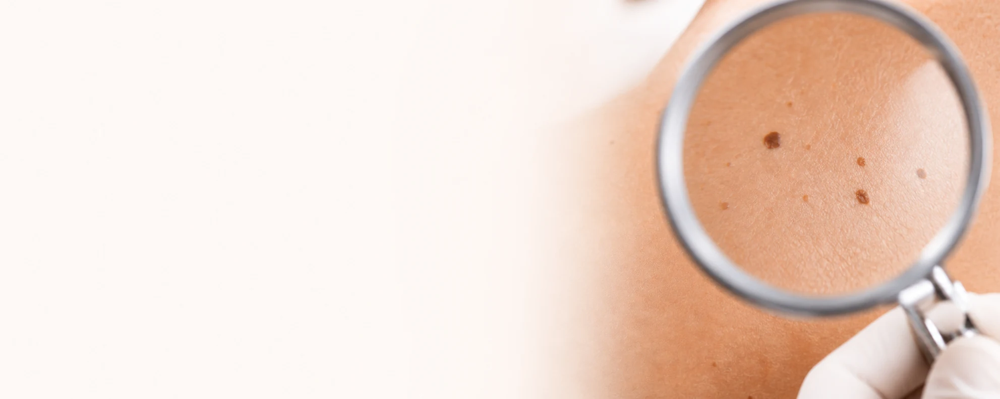
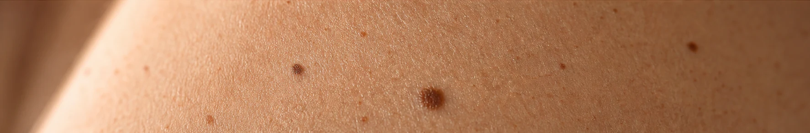

Diagnóstico
Entender a origem de cada alteração é o primeiro passo para um tratamento seguro e eficaz.
- Patch Test
- Biópsia de pele
Diagnóstico preciso, tratamento individualizado e acompanhamento com um dermatologista de confiança.
Agendar consultaTratamentos

Entender a origem de cada alteração é o primeiro passo para um tratamento seguro e eficaz.
Quando procurar um dermatologista

Alterações de cor, formato, tamanho ou sensibilidade merecem avaliação médica.
Queda persistente, falhas ou mudanças no couro cabeludo podem ter diferentes causas.
Unhas encravadas e alterações recorrentes podem precisar de cuidado específico.
A consulta também pode ser preventiva, mesmo quando não existe uma queixa urgente.
Cuidado técnico, atualização constante e compromisso com cada paciente.
CRM-CE 9160 RQE 1655
Localização
Experiências de pacientes
Trechos de opiniões públicas sobre o Dr. Evandro e a Clínica da Pele.
Um ótimo dermatologista, atencioso e prestativo.
Excelente profissional, humano, capacitado e experiente.
Competente, atualizado, comunicativo e empático.
Médico muito bom e atencioso.
Médico muito bom e atencioso.
Competente, atualizado, comunicativo e empático.
Excelente profissional, humano, capacitado e experiente.
Um ótimo dermatologista, atencioso e prestativo.
O atendimento é em dermatologia geral, com avaliação de doenças da pele, cabelo e unhas para todas as idades.
A experiência varia conforme o procedimento. O Dr. Evandro explica a indicação e os cuidados antes de qualquer conduta.
O tempo depende da necessidade de cada paciente e da avaliação realizada durante a consulta.
Sim. A clínica atende pacientes de todas as idades.
Confirme essa orientação e as regras do seu convênio diretamente com a equipe pelo WhatsApp.